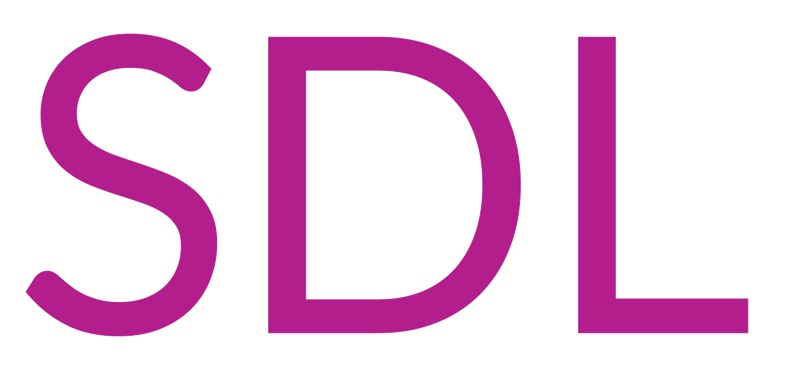

如何快速感知项目立项？如何感知应用上线？如何跟踪应用迭代？越权漏洞频发如何解决？

前言
应用安全如何做？这是一个老生常谈的问题，那为什么还要提这个话题呢？在笔者经历了短暂的两年多的应用安全建设来看，SDL的完整落地是一个很大的难题。当然，像其中的培训、代码扫描以及应急响应这几部分，各种落地方案很成熟，也就不提了。应用安全建设的本质就是运营，最难落地的差不多就是安全评审了。
如何进行安全评审，从方法论来看也不是什么难题，通过STRIDE威胁建模模型和DREAD威胁评级模型，再融入公司的实际情况，一份定制化的评审CheckList差不多就可以出炉了。然后问题就来了，在哪个环节切入？通过什么方式？如何持续运营？
安全评审需要介入的三个节点
立项时、上线时、迭代时。
立项时：根基不牢地动山摇，这个阶段需要进行架构安全评审。架构安全评审的必要性在于可以用最小的成本解决最大的风险，如果架构性安全问题在这个阶段未被发现，后续会随着一次次迭代，修复成本和风险都会急剧上升。
上线时：现在的白盒扫描，更多的是发现代码层漏洞，但是对于架构相关和业务相关的风险，就有心无力了。这也就引出了应用上线安全评审的必要性，验证立项评审阶段的风险是否存在，同时评审其有没有业务逻辑相关风险(越权、敏感信息等)。
迭代时：现在的开发思路大多都是快速立项、快速上线、持续迭代，也就导致了大部分的功能是在后期迭代过程中上线的，经过笔者的简单统计，当应用完成度在90%以上时，迭代新增的接口约占80%以上，换句话说，绝大多数的web接口都没有经过安全评审就暴露到公网当中去了，成为无数的攻击面，进而导致了权限相关安全风险的频发。
立项时--快速感知
如何做到快速感知？笔者了解到的有这么几种：
一是和PD混熟，有新项目时及时同步，这种方法具有局限性，适合应用比较少的公司或者公司的某条业务线；
二是利用现有平台，往往在中台支撑部门、工程效能部门等，会有一些环节可以感知到立项，财务部门也是一个非常好的环节。这个时候就要发挥敏锐的嗅觉，找到这样的点，然后形成联动。这些平台大概率会接受合作，一则可以提升该平台的价值，二来可以提升其影响力；
三是自立门户成为入口，这种方案的思想是让项目在安全平台上立项，想要实现需要运气。为什么这么说呢，想要做这件事，需要大量的人员投入和强制的流程更改，能决定这事的往往需要CXO的支持，要想获得他们的支持，就需要一个影响足够大的安全风险。不过据笔者所知，有几家大公司就是这么做的。
第一种方案，灵活性太强，效果时好时坏，笔者在很长一段时间里都是用这种方法，最后的结果很惨，随着业务的迅速发展，项目评审率跌至很低的水位。
第二种方案的可行性非常强，是一个成本低效果好的抓手。但是有一个问题是，项目非常多怎么办？笔者现在的思路是按照项目的等级来评审，项目等级的划分有很多种方法，例如人日、业务线等等
第三种方案就不提了，时刻准备着，机会来了抓紧。
当找到了有效的抓手时，一定要记得带上数据安全、业务安全等，这个阶段的主要风险往往集中在风控、合规等。
上线时--发布卡点
上线发布卡点，这个做起来就非常容易了，嵌入到应用构建平台中去就可以实现。有一个问题是，为什么不每次发布都卡点呢？
其实去看一下构建平台的发布记录就知道了，过于频繁，完全无法运营，所以只能退而求其次，卡住第一次上线发布。
迭代时--持续跟踪
上边说到“迭代新增的接口约占80%以上”，这就是一个超级大风险，迭代接口的安全性全依赖于开发的安全意识和应急响应。虽然在上线后会有持续的黑盒扫描，但是目前还没有哪个工具可以低误报、低风险的发现权限相关漏洞吧。
在上线评审那里有说到过，构建平台的发布记录非常多，如果依赖这个去评审迭代，会消耗大量的精力，当应用只有两位数时还能勉强运营，但是当应用数量上升到几百、几千的时候，每天最多迭代几十万行代码，怕是不吃不喝也搞不定了。
这里讲一下笔者的思路，commit监控：
1、每隔一段时间自动拉取commit记录；
2、获取应用源码进行解析（白盒代码扫描工具中大多都可以做到源码解析，笔者是自己实现的）；
3、解析diff记录，获取新增web接口；
4、通过污点跟踪结合关键方法(permission等)大致判断风险指数(这个笔者实现起来效果不是很好，几乎每个应用都有自己独特的鉴权逻辑，通用程度低)。
只需要这几步，即可以实现应用新增web接口的跟踪。可能还有一些其它通用接口平台，其实跟踪思想也是类似。
不过在笔者的运营过程中发现，还是会存在新增接口过多的情况，现在采用的是优先级的方案（重点应用、发生过高危风险的应用等），发现新增接口后，大部分情况下，人工快速审计下代码就可以发现风险了，当然还是会存在各种奇葩的鉴权逻辑，这时候就要和开发交流了。
这段时间的运营感受就是，随着覆盖应用的增多，每天要读代码量也开始快速上升，不过效果还是很明显的。第4点的自动化分析需求愈加迫切。
总结
总结下就是，三个节点，关键之处在于找到这三个节点的抓手，充分利用现有资源，如果实在没有，那就创造抓手。用技术的思路去做运营，用创业的心态去做产品。
本文纯属笔者的经验之谈，如有偏颇之处，还望指出，不甚感谢。
本文由 B1ueB0ne
创作，采用 知识共享署名4.0 国际许可协议进行许可
本站文章除注明转载/出处外，均为本站原创或翻译，转载前请务必署名
最后编辑时间为: 2020-08-24T10:45:35+08:00